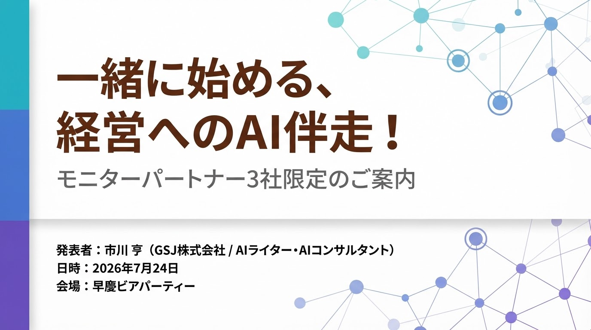
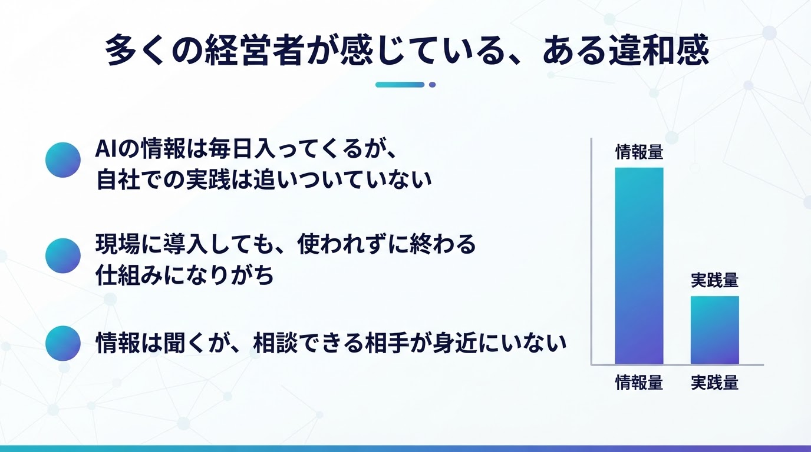
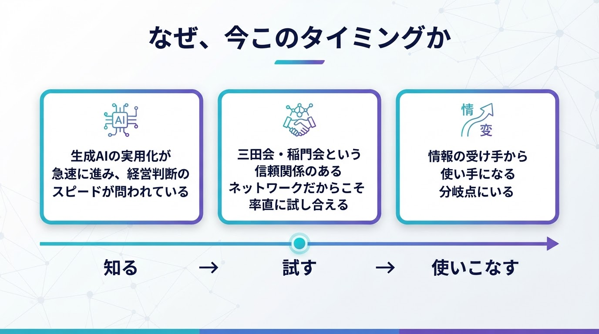
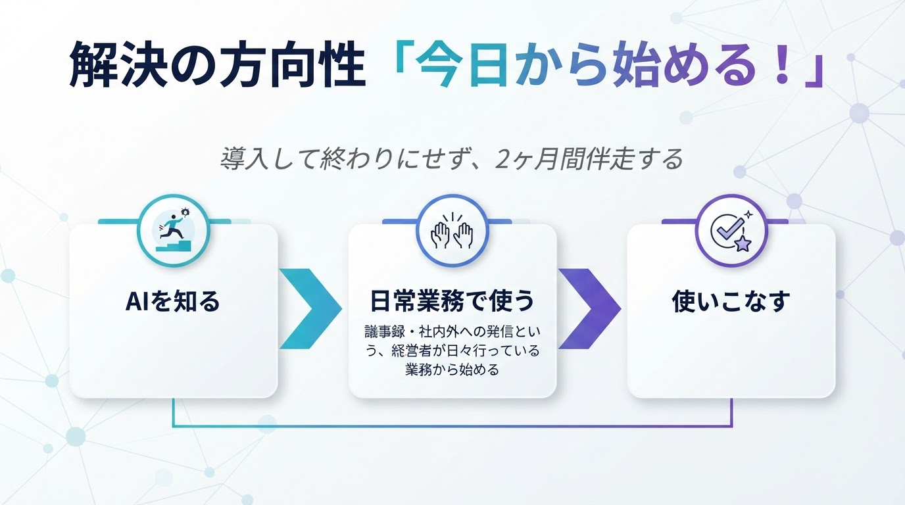
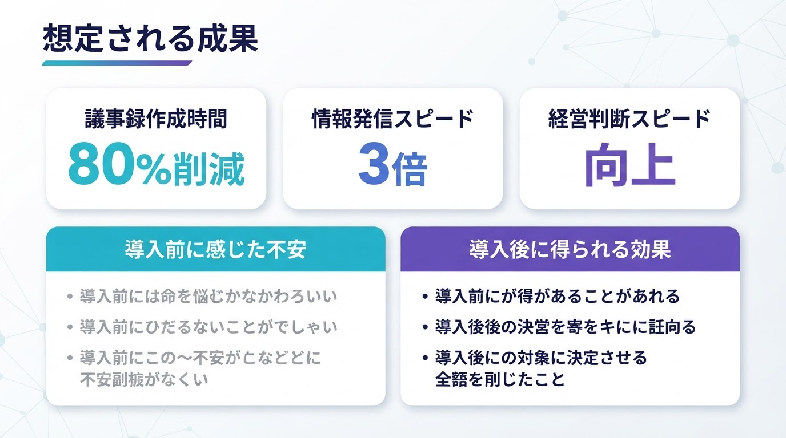

高コントラスト版 / 音声つき / クリックで再生開始 / ← → / Home End / F
ナレーション＋BGMつき版
ブラウザの仕様上、音声つき自動再生は最初のクリックが必要です。開始ボタンを押すと、BGMを小さく流しながら各スライドのナレーション再生と自動ページ送りを始めます。
落ち着いた男性ナレーション
控えめBGM
ナレーション優先

3社限定AIモニターパートナー募集
一緒に始める、
経営へのAI伴走！
モニターパートナー3社限定のご案内
発表者市川 亨（GSJ株式会社 / AIライター・AIコンサルタント）
日時2026年7月24日
会場早慶ビアパーティー
Issue Recognition
多くの経営者が感じている、
ある違和感
情報は増えている。けれど、実践はまだ追いつかない。
- 1AIの情報は毎日入ってくるが、自社での実践は追いついていない
- 2現場に導入しても、使われずに終わる仕組みになりがち
- 3情報は聞くが、相談できる相手が身近にいない
ビジュアル候補

候補例：情報量と実践量のギャップを示す棒グラフ
Why Now
なぜ、今このタイミングか
「知る」から「試す」へ。いまが分岐点です。
POINT 1
生成AIの実用化が急速に進み、経営判断のスピードが問われている
POINT 2
三田会・稲門会という信頼関係のあるネットワークだからこそ率直に試し合える
POINT 3
情報の受け手から使い手になる分岐点にいる
知る→試す（現在地）→使いこなす
ビジュアル03

候補例：知る → 試す → 使いこなす の流れ図
Today Onward
解決の方向性
「今日から始める！」
AIを“知る”から、“日常業務で使う”へ。
- 1AIを知るから、日常業務で使うへ橋渡しする
- 2議事録・社内外への発信という、経営者が日々行っている業務から始める
- 3導入して終わりにせず、2ヶ月間伴走する
ビジュアル04

候補例：3段階フロー図 / 伴走イメージ
8 Week Program
2ヶ月間伴走プログラムの内容
診断 → 導入 → 定着 → 自走化まで、段階的に進めます。
Week 1-2 現状診断
議事録・発信業務の実態を見える化
Week 3-4 AI導入
議事録自動生成・発信文作成の実装
Week 5-6 定着支援
現場での運用サポート・質疑応答
Week 7-8 自走化
AIを日常業務に溶け込ませる
ビジュアル枠
ここに「4区分の工程図」
参考画像は省略し、文字の視認性を優先しています。
Benefits
限定3社のみ
モニターパートナー3社の特典
初期導入の不安を下げながら、成果につながる設計でご一緒します。
特典① 特別価格
通常5万円/月のところ、モニター価格3万円/月（税別）
特典② 個別最適化
貴社の業務・課題に合わせカスタマイズ
特典③ 継続サポート
プログラム終了後1ヶ月の無料フォローアップ
ビジュアル
ここに「3特典カード」
価格表記は本文側で更新済み。右側はダミー表示のみで旧金額は出しません。
Expected Outcomes
想定される成果
時間短縮だけでなく、判断・発信・推進のリズムが整います。
議事録作成時間
80%削減情報発信スピード
3倍経営判断スピード
向上導入前の不安
- 現場に定着するか
- 効果が見えるか
- 使いこなせるか
導入後の変化
- 反復業務の負荷軽減
- 発信共有が速くなる
- 考える時間が増える
ビジュアル

候補例：KPIカード / Before → After 比較図
Simple Process
進め方の流れ
宴会場向けに、3ステップでシンプルに整理しています。
1
相談する
現状のお困りごとをヒアリングし、方向性を確認
2
伴走する
8週間で議事録・発信業務からAI活用を実装
3
定着させる
成果確認、次の一手につなげます。
ビジュアル枠
「相談 → 伴走 → 定着」
図解候補だけを見せ、文字面積を大きく確保しています。
FAQ Simplified
よくあるご質問
宴会場向けに、特に多い2点に絞って掲載しています。
Q
AIに詳しくなくても大丈夫ですか？A
はい。普段お使いの業務から始めるため、専門知識は不要です。Q
投資対効果は見えますか？A
導入前の数値を基準に、時間短縮や発信速度などを定量的に可視化します。ビジュアル枠
ここに「Q&Aカード」
または「安心材料2点」
または「安心材料2点」
FAQは2項目に絞り、遠くからでも読みやすくしています。
Closing Message
一緒に、未来の経営を
始めませんか？
モニターパートナー3社限定の募集です。
まずは30分の個別相談から
発表者: 市川 亨（GSJ株式会社）
Mail: ichi1958@sfc.keio.ac.jp
Tel: 080-5673-4710
2026年7月24日 早慶ビアパーティーにて
まずは覗いてみるだけでも
claude.ai/code/artifact/
7b34663a-0d9a-4918-80b5-59b662106004
7b34663a-0d9a-4918-80b5-59b662106004
募集概要・4つの目線フレームワークなど詳細をご覧いただけます
1/10
1 / 10